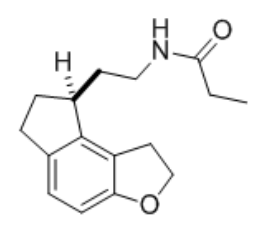
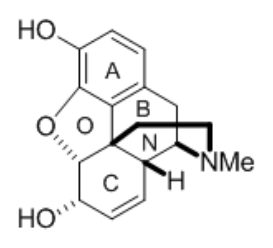
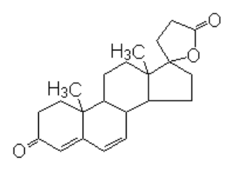

開卷有益 ／
藥師 ／ 藥理學與藥物化學 ／ 104 年第 1 次104 年第 1 次藥師藥理學與藥物化學試題與答案
這一頁是民國 104 年第 1 次藥師藥理學與藥物化學的整份歷屆試題，共 80 題，題目與標準答案出自考選部「國家考試試題及測驗式試題答案」開放資料，其中 74 題附有詳解。以下逐題列出題幹、選項與答案；要計時作答或記錄成績，請用線上練習。
考選部原始場次代碼：104020
線上作答這一科 →
全部 80 題
第 1 題
當鹼化尿液時會促使酸性藥物由腎臟排出，下列何者例外？
（A） acetazolamide（B） amphetamine（C） sulfathiazole（D） probenecid答案：（B）
詳解與考點 正解：尿液鹼化會使弱酸性藥物解離為帶電陰離子，腎小管再吸收減少，排泄增加。amphetamine 是弱鹼性藥物；尿液鹼化時其非離子型比例上升，反而較易再吸收，不能套用酸性藥物的離子捕捉規則，故選 B。
A：acetazolamide 具有弱酸性基團，尿液鹼化會增加其離子化與腎臟排出，並非例外。
C：sulfathiazole 為磺胺類弱酸性藥物，鹼化尿液時離子化增加，排泄方向符合題幹敘述。
D：probenecid 是有機弱酸，尿液鹼化可減少其被動再吸收並增加排泄，並非例外。
本題考點：離子捕捉（ion trapping）——改變尿液 pH 時，弱酸在鹼性尿液中、弱鹼在酸性尿液中較易離子化而排出；腎小管再吸收（renal tubular reabsorption）——非離子型較易穿膜再吸收，帶電型則較易留在尿液中。
第 2 題
下列有關肝臟藥物代謝酵素之敘述，何項錯誤？
（A） Cytochrome P450是一flavoprotein（B） Cytochrome P450 是一氧化酵素（C） 大部分藥物代謝酵素存在於細胞質與內質網（D） 藥物經glucuronidation後水溶性增加答案：（A）
詳解與考點 正解：Cytochrome P450 是含血基質（heme）的單氧化酵素系統，不是 flavoprotein。這個敘述常與傳遞電子給 P450 的 NADPH-cytochrome P450 reductase 混淆，後者才含 flavin，故（A）錯誤，故選 A。
B：Cytochrome P450 會在氧化反應中將一個氧原子導入受質，屬單氧化酵素，敘述正確。
C：多數藥物代謝酵素分布在細胞質與內質網，兩者都是肝臟生物轉化的重要位置，敘述正確。
D：glucuronidation 將葡萄糖醛酸接到藥物或代謝物上，通常提高水溶性並利於排除，敘述正確。
本題考點：Cytochrome P450（CYP450）——判斷 P450 性質時記住其核心為 heme，不要與電子傳遞的 flavoprotein reductase 混淆；第一相代謝（phase I metabolism）——氧化常由 CYP450 催化；第二相代謝（phase II metabolism）——glucuronidation 常使代謝物更親水。
第 3 題
下列有關給藥途徑之敘述，何者錯誤？
（A） 靜脈注射藥物之生體可用率通常高於口服給與（B） 油狀液體藥物適合以靜脈注射給與（C） 經皮吸收給藥可延長藥物作用時間（D） 舌下給與藥物可避免藥物受肝臟之首渡排除答案：（B）
詳解與考點 正解：一般油狀液體不適合作靜脈注射，油滴直接進入血管可能造成栓塞及製劑相容性風險；經專門設計的靜脈乳劑則是不同情況。因此（B）錯誤，故選 B。
A：靜脈注射直接進入全身循環，生體可用率為 1，通常高於會受吸收與首渡代謝影響的口服給藥。
C：經皮吸收製劑可持續釋放並緩慢吸收，使血中濃度維持較久，能延長作用時間。
D：舌下給藥由口腔黏膜吸收後進入體循環，可避開經門脈先到肝臟的首渡排除，敘述正確。
本題考點：給藥途徑（route of administration）——選擇途徑時同時看製劑物性、吸收速度與安全性，油狀液體不可直接以一般靜脈注射處理；首渡代謝（first-pass metabolism）——口服先經腸肝循環，舌下與靜脈途徑可避開或不受其影響。
第 4 題
抗生素Sulfamethoxazole和Trimethoprim因可分別抑制下列那一組酵素，故可產生抑菌協同 作用？
（A） Dihydropteroate synthase；Dihydrofolate reductase（B） DNA gyrase；Transpeptidase（C） Dihyrofolate reductase；Thymidylate synthase（D） Transpeptidase；Dihydropteroate synthase答案：（A）
詳解與考點 正解：sulfamethoxazole 先抑制 dihydropteroate synthase，阻斷細菌葉酸合成前段；trimethoprim 再抑制 dihydrofolate reductase。兩藥連續阻斷同一路徑，因而產生抑菌協同作用，故選 A。
B：DNA gyrase 是 fluoroquinolones 的標的，transpeptidase 是 β-lactams 的標的，兩者都不是這一組複方的對應酵素。
C：此組把 sulfamethoxazole 的標的誤寫為 dihydrofolate reductase，並把 trimethoprim 誤配為 thymidylate synthase；正確順序是（A）所列的前段再後段阻斷。
D：transpeptidase 與細胞壁肽聚糖交聯有關，不是 sulfamethoxazole 的標的；此配對未呈現兩藥的葉酸路徑協同。
本題考點：序列性阻斷（sequential blockade）——兩藥抑制同一代謝路徑的相鄰步驟時，效果可強於單獨使用；葉酸合成（folate synthesis）——sulfamethoxazole 對 dihydropteroate synthase，trimethoprim 對 dihydrofolate reductase，需按順序配對。
第 5 題
下列那一組抗生素併用可產生拮抗作用而降低抑菌效果？
（A） Clavulanate + Ticarcillin（B） Piperacillin + Tobramycin（C） Chloramphenicol + Piperacillin（D） Cefazolin + Amikacin答案：（C）
詳解與考點 正解：piperacillin 的殺菌作用需要細菌持續生長並合成細胞壁；chloramphenicol 抑制 50S 核糖體、使細菌生長受抑。前者需要的增殖狀態被後者壓低時，可能降低 piperacillin 的效果，形成拮抗，故選 C。
A：clavulanate 可抑制 β-lactamase，保護 ticarcillin 不被水解，屬增強 β-lactam 效果的搭配，不是題幹所問的拮抗。
B：piperacillin 破壞細胞壁後可增加 tobramycin 進入細菌的機會，這類 β-lactam 與 aminoglycoside 併用通常用來追求協同。
D：cefazolin 與 amikacin 分別作用於細胞壁與核糖體，兩者皆為殺菌性藥物，並非以抑制細菌生長來削弱另一藥作用的組合。
本題考點：抗生素拮抗（antibiotic antagonism）——殺菌藥若仰賴細菌增殖，與先使細菌停滯的藥物併用時要警覺效果可能下降；β-lactam 與 aminoglycoside 協同（beta-lactam–aminoglycoside synergy）——細胞壁受損可促進 aminoglycoside 進入細菌。
第 6 題
下列何者為Gentamicin產生抗藥性的主要機轉？
（A） 細菌產生acetylase將其結構改變而失效（B） 細菌產生β-lactamase將其結構破壞（C） 細菌改變peptidoglycan中D-Ala-D-Ala結構使其無法與藥物結合（D） 細菌產生轉運蛋白將藥物送出細胞外答案：（A）
詳解與考點 正解：gentamicin 的典型主要抗藥性機轉是細菌以 aminoglycoside-modifying enzymes 修飾藥物。acetylase 可乙醯化 gentamicin 的胺基，改變其結構並降低與 30S 核糖體結合的能力，故選 A。
B：β-lactamase 水解的是 β-lactam 環，gentamicin 並不具有此結構，不能用此機轉解釋其主要抗藥性。
C：改變 peptidoglycan 的 D-Ala-D-Ala 是降低 glycopeptides 結合的機轉，與 gentamicin 的 30S 核糖體標的不同。
D：藥物外排可參與某些細菌的抗藥性，但 gentamicin 的經典主要機轉是藥物修飾酵素，不是題述的外排轉運。
本題考點：aminoglycoside 抗藥性（aminoglycoside resistance）——優先想到乙醯化、腺苷化或磷酸化等藥物修飾酵素；作用標的（drug target）——gentamicin 結合 30S 核糖體，D-Ala-D-Ala 改變則是 glycopeptide 類的辨識點。
第 7 題
有關Nafcillin之敘述，下列何者正確？
（A） 可有效治療綠膿桿菌（Peudomonas aeruginosa）的感染（B） 易被葡萄球菌之β-lactamase破壞結構（C） 對已改變penicillin-binding proteins（PBPs）之葡萄球菌仍有效（D） 用於治療腎功能不良病人感染問題時不須降低劑量答案：（D）
詳解與考點 正解：nafcillin 主要經肝臟代謝與膽汁排除，不以腎臟清除為主；腎功能不良時通常不須因腎功能單獨降低劑量。因此（D）正確，故選 D。
A：nafcillin 是抗葡萄球菌 penicillin，抗綠膿桿菌活性不足；治療 Pseudomonas aeruginosa 需考慮具抗綠膿桿菌活性的 penicillin。
B：nafcillin 的側鏈可抵抗葡萄球菌 β-lactamase 水解，正因如此才適用於產生該酵素的葡萄球菌感染。
C：葡萄球菌若改變 penicillin-binding proteins，尤其形成低親和力標的時，nafcillin 便難以有效結合，不能視為仍有效。
本題考點：抗葡萄球菌 penicillin（anti-staphylococcal penicillin）——辨認 nafcillin 時同時記住抗 β-lactamase、但不克服改變的 PBPs；藥物排除（drug elimination）——腎功能不良是否調整劑量，要先判斷藥物主要是腎臟還是肝膽清除。
第 8 題
下列治療淋巴瘤藥物CHOP合併用藥中，何者最會產生出血性膀胱炎（Hemorrhagic cystitis）的副作用？
（A） Cyclophosphamide（B） Hydroxydaunorubicin（C） Vincristine（D） Prednisone答案：（A）
詳解與考點 正解：CHOP 組合中，Cyclophosphamide 經肝臟代謝後生成的 acrolein 會隨尿液排出並直接傷害膀胱尿路上皮，是出血性膀胱炎的典型原因；此毒性可藉充分水化與 mesna 預防，故選 A。
B：Hydroxydaunorubicin 是 anthracycline 類藥物，較具代表性的累積毒性是心肌病變；它不產生導致尿路上皮受損的 acrolein。
C：Vincristine 阻斷 microtubule 聚合，主要誘發周邊與自主神經毒性，例如感覺異常或腸蠕動減弱，並非出血性膀胱炎。
D：Prednisone 為 glucocorticoid，常見代謝與免疫抑制相關不良反應；沒有 Cyclophosphamide 的尿中毒性代謝物。
本題考點：Cyclophosphamide 尿路毒性（cyclophosphamide-induced hemorrhagic cystitis）——化療後出現血尿或膀胱刺激症狀時，先聯想尿中 acrolein 對尿路上皮的傷害；Mesna（mesna）——遇到會產生 acrolein 的 oxazaphosphorine 類藥物，以含巰基的保護作用降低膀胱毒性；CHOP 療法（CHOP regimen）——辨識複方不良反應時，先把各成分的特徵毒性分開判斷。
第 9 題
Aminoglycoside一般不單獨使用於肺炎（pneumonia）的原因，不包括下列何者？
（A） 穿入肺部感染組織的能力差（B） 肺部感染組織的pH值低（C） 肺部感染組織的氧張力低（D） 易引起肝毒性答案：（D）
詳解與考點 正解：Aminoglycoside 進入細菌需仰賴氧依賴性運輸，肺部感染灶的酸性、低氧與組織穿透限制都會降低單藥效應；其主要劑量限制毒性是腎毒性與耳毒性，不是肝毒性，故選 D。
A：穿入肺部感染組織的能力較差會使感染灶達不到有效濃度，確為 Aminoglycoside 不單獨治療肺炎的原因，故非答案。
B：酸性環境會降低 Aminoglycoside 的細菌攝入，pH 值低的感染灶可削弱其殺菌作用，故此敘述正確。
C：低氧張力會妨礙氧依賴性轉運；這也解釋 Aminoglycoside 在厭氧或缺氧環境中活性較差，故非答案。
本題考點：Aminoglycoside 細菌攝入（oxygen-dependent uptake）——感染灶缺氧或偏酸時，先判斷藥物能否有效進入細菌；Aminoglycoside 毒性（aminoglycoside toxicity）——腎毒性與耳毒性是辨識此類藥的重要安全性線索，肝毒性不是其典型限制。
第 10 題
下列何種藥物之作用機制為抑制plasminogen形成plasmin？
（A） Urokinase（B） Tranexamic acid（C） Tinzaparin（D） Anagrelide答案：（B）
詳解與考點 正解：Tranexamic acid 是 lysine 類似物，會阻礙 plasminogen 與 fibrin 的結合及其活化成 plasmin，因此抑制 fibrinolysis、保留既有血栓，故選 B。
A：Urokinase 是 plasminogen activator，作用正是促使 plasminogen 轉成 plasmin，方向與題目所問相反。
C：Tinzaparin 為 low-molecular-weight heparin，藉 antithrombin 抑制 factor Xa 為主，並不直接阻止 plasminogen 活化。
D：Anagrelide 以抑制 phosphodiesterase 3、減少血小板生成與聚集為主要作用，並非 fibrinolysis 抑制劑。
本題考點：抗纖維蛋白溶解藥（antifibrinolytic agent）——要保住已形成的 fibrin 血栓時，選擇阻斷 plasminogen 活化或 plasmin 與 fibrin 結合的藥物；纖維蛋白溶解藥（fibrinolytic agent）——Urokinase 這類藥反而增加 plasmin，適用判斷必須與止血需求分開。
第 11 題
有關Clopidogrel之抗凝血作用，下列敘述何者錯誤？
（A） 不可逆抑制血小板之ADP receptor（B） 屬於thienopyridine衍生物（C） 會影響前列腺素代謝（D） 比ticlopidine的副作用少答案：（C）
詳解與考點 正解：分辨 Clopidogrel 的機轉時，作用點是血小板的 P2Y12 型 ADP receptor，而非 cyclooxygenase 或前列腺素路徑；因此「影響前列腺素代謝」不是其抗血小板機轉，故選 C。
A：Clopidogrel 的活性代謝物會不可逆抑制血小板 ADP receptor，使 ADP 所促成的血小板活化受阻，此敘述正確。
B：Clopidogrel 屬 thienopyridine 衍生物；同類藥物的共同辨識點是抑制 P2Y12，而非抑制 COX。
D：相較於 Ticlopidine，Clopidogrel 的血液學不良反應較少，是其取代前者的常見理由之一，故非答案。
本題考點：P2Y12 抑制劑（P2Y12 inhibitor）——看到 Clopidogrel 或 thienopyridine 時，判斷重點放在不可逆阻斷血小板 ADP 訊號；COX 抑制與前列腺素（cyclooxygenase inhibition and prostaglandin）——只有影響 COX 的抗血小板藥才以抑制 thromboxane 與前列腺素代謝為核心。
第 12 題
Niacin引起之皮膚潮紅、搔癢、乾燥及皮疹可使用下列何種藥物緩解？
（A） Anisindione（B） Ibuprofen（C） Chlordiazepoxide（D） Conivaptan答案：（B）
詳解與考點 正解：Niacin 引起的潮紅與搔癢主要由 prostaglandin 介導；Ibuprofen 抑制 cyclooxygenase，降低 prostaglandin 生成，因而可緩解此類皮膚反應，故選 B。
A：Anisindione 為 vitamin K antagonist，用於抗凝血，沒有抑制 Niacin 潮紅所涉 prostaglandin 的作用。
C：Chlordiazepoxide 為 benzodiazepine 類藥物，主要作用於 GABAA receptor，不能處理 Niacin 的 prostaglandin 相關潮紅。
D：Conivaptan 為 vasopressin V1a/V2 receptor antagonist，適應症與低鈉血症相關，並非緩解 Niacin 皮膚不良反應的藥物。
本題考點：Niacin 潮紅（niacin-induced flushing）——出現潮紅、搔癢等立即性皮膚反應時，先連結 prostaglandin 釋放；NSAIDs（nonsteroidal anti-inflammatory drugs）——需要降低 prostaglandin 介導症狀時，判斷是否有 COX 抑制作用。
第 13 題
下列藥物及其適應症配對，何者最適當？
（A） Clomiphene－停經後婦女骨質疏鬆（B） Raloxifene－助孕（C） Goserelin－子宮內膜異位（D） Letrozole－前列腺癌答案：（C）
詳解與考點 正解：Goserelin 為 GnRH agonist，持續給藥使 GnRH receptor 下調，降低 gonadotropin 與性腺類固醇生成；降低雌激素刺激可用於子宮內膜異位，故選 C。
A：Clomiphene 是 selective estrogen receptor modulator，藉解除雌激素負回饋促進排卵，用於排卵障礙，不是停經後骨質疏鬆的配對。
B：Raloxifene 也是 selective estrogen receptor modulator，用於停經後骨質疏鬆；它不作為助孕的排卵誘導藥。
D：Letrozole 為 aromatase inhibitor，主要降低雌激素，常用於乳癌或特定排卵誘導，並非前列腺癌的標準配對。
本題考點：GnRH agonist 去敏化（GnRH receptor downregulation）——連續而非脈衝式刺激 GnRH receptor 時，判斷結果為性腺軸抑制；子宮內膜異位藥物治療（endometriosis pharmacotherapy）——需要降低雌激素對異位內膜刺激時，辨識 GnRH agonist 的用途；選擇性雌激素受體調節劑（selective estrogen receptor modulator）——依組織效應區分助孕與骨質疏鬆適應症。
第 14 題
下列何藥物最不易引起男性化之副作用？
（A） Desogestrel（B） Medroxyprogesterone（C） Hydroxyprogesterone（D） Megestrol答案：（A）
詳解與考點 正解：以孕激素的 androgenic activity 比較，Desogestrel 屬第三代 progestin，雄性素活性相對較低，因而較不易出現多毛、痤瘡等男性化表現，故選 A。
B、C、D：本題的比較判準是相對低的 androgenic activity；（B）Medroxyprogesterone、（C）Hydroxyprogesterone 與（D）Megestrol 都不是此題所指的第三代低雄性素活性 progestin 代表，不能比（A）更能排除男性化副作用。
本題考點：孕激素的雄性素活性（androgenic activity of progestins）——比較男性化不良反應時，先看各 progestin 的相對 androgenic activity，而非只看是否具有孕激素作用；第三代孕激素（third-generation progestin）——需要選擇較低雄性素活性者時，辨識 Desogestrel 的藥理定位。
第 15 題
下列何者為Propranolol與Nitroglycerin合併用來治療繼發性（Secondary）心絞痛的藥理作 用？
（A） 增加心肌收縮的力量（B） 減少冠狀循環血管的收縮作用（C） 減少preload（D） 減少心跳速率本題送分，無標準答案
詳解與考點 本題經考選部公告一律給分。Propranolol與Nitroglycerin併用治療續發性心絞痛，(C)「減少preload」與(D)「減少心跳速率」皆為兩藥併用之合理藥理作用──Nitroglycerin主要經靜脈擴張降低preload，Propranolol則經β1阻斷降低心跳速率並抵消硝酸鹽反射性心搏過速，二者皆可視為「合併用來治療」之藥理作用而生認定分歧，故送分。(A)兩藥皆不增加心肌收縮力；(B)冠狀血管收縮並非其主要作用機轉，皆可排除。作答以現行藥理學抗心絞痛藥物章節為準。
第 16 題
下列何種藥物為治療毛地黃中毒的最佳藥物？
（A） Amiodarone（B） Quinidine（C） Lidocaine（D） Verapamil答案：（C）
詳解與考點 正解：在題列藥物中，Lidocaine 為 class Ib antiarrhythmic，能抑制毛地黃中毒所致的心室性異位節律，且對房室傳導的額外抑制較少，故選 C。
A：Amiodarone 可增加 Digoxin 暴露量並加重緩脈或傳導異常的風險，不能作為毛地黃中毒的優先處置選項。
B：Quinidine 會提高血中 Digoxin 濃度，可能使中毒加劇，與治療目的相反。
D：Verapamil 也可能提高 Digoxin 濃度，且會抑制房室結傳導，不適合用來處理此中毒引起的心律不整。
本題考點：毛地黃中毒心律不整（digoxin-induced ventricular arrhythmia）——題幹已指向毛地黃中毒時，先排除會提高 Digoxin 濃度或加重房室傳導抑制的藥物；Class Ib 抗心律不整藥（class Ib antiarrhythmic）——面對心室性異位節律時，Lidocaine 的作用位置與傳導影響可作為辨識線索。
第 17 題
下列何種藥物是用來治療抗利尿荷爾蒙過多症（SIADH）？
（A） Desmopressin（B） Furosemide（C） Triamterene（D） Demeclocycline答案：（D）
詳解與考點 正解：Demeclocycline 會降低腎集合管對 ADH 的反應，使水再吸收下降並造成類腎性尿崩症效果，因此可用來處理 SIADH 的不適當抗利尿，故選 D。
A：Desmopressin 是 ADH 類似物，會增加水再吸收；在 SIADH 的水滯留狀態下作用方向相反。
B：Furosemide 可在特定處置中合併其他措施增加游離水排出，但它不是藉造成腎臟對 ADH 抵抗來治療 SIADH 的典型藥物。
C：Triamterene 阻斷集尿管 ENaC，主要為保鉀利尿作用，並不阻斷 ADH 促進水再吸收的訊號。
本題考點：抗利尿激素不當分泌症候群（syndrome of inappropriate antidiuretic hormone secretion）——低鈉血症合併不適當水滯留時，判斷是否需要降低 ADH 作用或增加游離水排出；Demeclocycline（demeclocycline）——需要以腎臟對 ADH 反應下降來改善 SIADH 時，辨識其造成類腎性尿崩症的作用。
第 18 題
下列有關Loop diuretics藥理作用之敘述，何者錯誤？
（A） 會抑制Na+-K+-2Cl- symport（B） 使體內缺水時，尿液濃縮功能受抑制（C） 在過量喝水時，排出低濃度尿液之現象受抑制（D） 其利尿作用受非類固醇抗發炎藥物（NSAIDs）加強答案：（D）
詳解與考點 正解：Loop diuretics 的利尿與血流動力效應部分仰賴腎臟 prostaglandin；NSAIDs 抑制 prostaglandin 生成後會降低腎血流與排鈉反應，結果是削弱而非加強 Loop diuretics 的利尿作用，故選 D。
A：Loop diuretics 在 thick ascending limb 抑制 Na+-K+-2Cl- cotransporter，使大量鈉、氯排出，此敘述正確。
B：抑制 thick ascending limb 的溶質再吸收會破壞腎髓質高滲梯度；缺水時需要濃縮尿液的能力因此受抑制，故非答案。
C：過量喝水時排出低滲尿液需要稀釋功能，而 Loop diuretics 也會妨礙此段對 NaCl 的再吸收，所以此現象受抑制的敘述正確。
本題考點：Loop diuretics（loop diuretics）——判斷濃縮與稀釋尿功能時，先看 thick ascending limb 是否能建立髓質滲透梯度；NSAIDs 與利尿劑交互作用（NSAID-diuretic interaction）——需要保留腎臟 prostaglandin 效應的利尿劑，遇到 NSAIDs 時先判斷藥效會被削弱。
第 19 題
那種利尿劑被證明在高血壓病人長期使用可減少病人死亡率？
（A） Furosemide（B） Acetazolamide（C） Isosorbide（D） Indapamide答案：（D）
詳解與考點 正解：Indapamide 為 thiazide 類似物利尿劑，具有長期使用於高血壓病人可降低死亡率的實證資料（如 HYVET 試驗中對老年高血壓病人的結果），故選 D。
A：Furosemide 為 loop 利尿劑，臨床定位以水腫、心衰竭等體液過量狀況為主，並非以降低高血壓病人死亡率為主要實證依據的長期用藥。
B：Acetazolamide 為碳酸酐酶抑制劑，臨床用於青光眼或高山症，並非常規高血壓治療用藥。
C：Isosorbide 屬滲透性利尿劑／硝酸鹽類血管擴張劑，臨床定位與降低高血壓死亡率的長期實證無關。
本題考點：利尿劑的降死亡率實證（mortality benefit of diuretics in hypertension）——並非所有利尿劑都有相同等級的長期預後實證，thiazide 類似物在多項大型試驗中展現降低心血管死亡率的效果；利尿劑分類與臨床定位——loop、thiazide（類似物）、碳酸酐酶抑制劑、滲透性利尿劑各有不同的主要適應症，須依此區分。
第 20 題
有一心衰竭與高血壓病人正服用Digoxin中，則下列何種利尿劑較適合用來作為降壓劑？
（A） Acetazolamide（B） Eplerenone（C） Bumetanide（D） Hydrochlorothiazide答案：（B）
詳解與考點 正解：心衰竭病人服用 Digoxin 時，降壓利尿劑的判斷重點之一是避免低血鉀，因低血鉀會增加 Digoxin 對 Na+/K+-ATPase 的作用與毒性風險。Eplerenone 為 aldosterone receptor antagonist，具保鉀與降壓作用，也適用於心衰竭情境，故選 B。
A：Acetazolamide 造成 bicarbonate 利尿，並非長期高血壓的優先降壓利尿劑，且不具保鉀優勢。
C：Bumetanide 是 Loop diuretic，雖可處理鬱血水腫，卻容易造成鉀流失；在 Digoxin 使用者中不如保鉀選項合適。
D：Hydrochlorothiazide 可作為降壓藥，但可能引起低血鉀，這個看似合理的降壓選項會增加 Digoxin 毒性風險。
本題考點：Digoxin 與血鉀（digoxin-potassium relationship）——使用 Digoxin 時，先判斷併用利尿劑是否會降低血鉀並放大毒性；醛固酮受體拮抗劑（aldosterone receptor antagonist）——心衰竭合併高血壓且需避免鉀流失時，辨識 Eplerenone 的保鉀定位；Loop 與 thiazide 利尿劑（loop and thiazide diuretics）——兩者都可能造成低血鉀，不能只因降壓或利尿有效就忽略交互風險。
第 21 題
那一種藥物對Digoxin中毒與血鉀低引起Torsade de pointes之心室心律不整同時具有療效？
（A） Ibutilide（B） Sotalol（C） Quinidine（D） Magnesium答案：（D）
詳解與考點 正解：在題列選項中，Magnesium 可抑制 Digoxin 中毒相關的心室性心律不整，且是處理低血鉀相關 Torsade de pointes 的重要藥物；Mg2+ 也參與 Na+/K+-ATPase 功能，故選 D。
A：Ibutilide 為 class III antiarrhythmic，會延長 QT interval，本身反而可能誘發 Torsade de pointes。
B：Sotalol 兼具 β-blockade 與 class III 作用，也會延長 QT interval，不能用來處理題目所述的 Torsade de pointes。
C：Quinidine 為 class Ia antiarrhythmic，延長 repolarization 並可能提高 Digoxin 濃度，對兩種情況都不是適當選擇。
本題考點：Torsade de pointes（torsade de pointes）——出現 QT 延長型多形性心室心搏過速時，先辨識 Magnesium 的角色並排除延長 QT 的 class Ia/III 藥物；Magnesium 與 Digoxin（magnesium in digoxin toxicity）——Digoxin 相關心律不整合併電解質異常時，判斷 Mg2+ 對心肌離子幫浦與節律穩定的支持作用。
第 22 題
那一種ACE inhibitor除了腎臟外，肝臟亦為其主要之排泄與代謝途徑？
（A） Fosinopril（B） Captopril（C） Enalapril（D） Benazepril答案：（A）
詳解與考點 正解：Fosinopril 為 prodrug，轉成 fosinoprilat 後的排除同時仰賴腎臟與肝膽途徑；這種雙路徑清除是它在 ACE inhibitor 中的辨識特徵，故選 A。
B：Captopril 主要經腎臟排除，與題目所問肝臟亦為主要排泄與代謝途徑的特徵不符。
C：Enalapril 雖需轉化為 enalaprilat，但其活性代謝物主要由腎臟排除，不能作為雙主要排除途徑的代表。
D：Benazepril 也會經肝臟活化為 benazeprilat，但題目所指腎臟與肝膽並列為主要清除途徑的典型 ACE inhibitor 是 Fosinopril。
本題考點：Fosinopril 雙途徑清除（dual renal and hepatic elimination of fosinopril）——比較 ACE inhibitor 的排除時，若腎臟與肝膽都被列為主要途徑，辨識 Fosinopril；ACE inhibitor 藥動學（ACE inhibitor pharmacokinetics）——面對腎功能變化的用藥題，先分辨藥物是否幾乎完全依賴腎臟清除。
第 23 題
下列那一種降壓藥物主要是以靜脈注射途徑投與，用來治療急性高血壓與重度心衰竭？
（A） Sodium Nitroprusside（B） Verapamil（C） Atenolol（D） Timolol答案：（A）
詳解與考點 正解：Sodium Nitroprusside 可快速釋放 nitric oxide，直接擴張小動脈與靜脈；以靜脈輸注可迅速調整血壓與前、後負荷，適用於急性高血壓與重度心衰竭，故選 A。
B：Verapamil 是 calcium channel blocker，雖可靜脈投與於部分心律不整，但其負性肌力作用使它不適合作為重度心衰竭的主要急救降壓藥。
C：Atenolol 為 β1-selective blocker，通常作為慢性降壓治療的一環，不是以靜脈輸注迅速處理急性高血壓與重度心衰竭的藥物。
D：Timolol 為 nonselective β-blocker，常見用途與青光眼或慢性心血管治療相關，不符合題目所述的靜脈急性處置。
本題考點：Sodium Nitroprusside（sodium nitroprusside）——需要以靜脈輸注迅速降低血壓並同時減少前、後負荷時，辨識其直接血管擴張作用；急性高血壓處置（acute hypertension management）——題幹同時出現急性、靜脈投與與重度心衰竭時，優先找可快速滴定的血管擴張劑。
第 24 題
下列有關acetazolamide藥理作用或副作用的敘述，何者錯誤？
（A） 會減少眼壓（B） 會引起代謝性酸中毒（Metabolic acidosis）（C） 使尿液pH值增加（D） 使尿液磷酸鈣之濃度減少答案：（D）
詳解與考點 正解：Acetazolamide 抑制 proximal tubule 的 carbonic anhydrase，使 bicarbonate 排出增加；結果是尿液鹼化與代謝性酸中毒，且可增加 calcium phosphate 結石風險，不會使尿液磷酸鈣濃度減少，故選 D。
A：Acetazolamide 抑制睫狀體 carbonic anhydrase，可減少房水生成並降低眼壓，此敘述正確。
B：Bicarbonate 流失使體內酸負荷相對增加，長期或明顯作用下可引起代謝性酸中毒，故非答案。
C：Bicarbonate 排入尿液會提高尿液 pH 值，這是 carbonic anhydrase inhibition 的直接結果，故此敘述正確。
本題考點：Carbonic anhydrase inhibitor（carbonic anhydrase inhibitor）——看到 bicarbonate 再吸收受阻時，依序判斷鹼性尿液與代謝性酸中毒；Acetazolamide 結石風險（acetazolamide-associated calcium phosphate stones）——尿液偏鹼時，辨識 calcium phosphate 析出與結石風險上升，而非濃度下降。
第 25 題
下列何者是短效性神經節阻斷劑，靜脈輸注可用於危急性高血壓？
（A） Hexamethonium（B） Mecamylamine（C） Trimethaphan（D） Tetraethylammonium答案：（C）
詳解與考點 正解：Trimethaphan 是短效性神經節阻斷劑，可用靜脈持續輸注並快速調整作用強度，因此可用於危急性高血壓，故選 C。
A：Hexamethonium 為較長效的神經節阻斷劑，起效與消退不如 Trimethaphan 適合以靜脈滴定處理危急性高血壓。
B：Mecamylamine 可口服且作用較長，並非本題所問短效、靜脈輸注的藥物。
D：Tetraethylammonium 雖具神經節阻斷作用，但不是臨床上以短效靜脈輸注處理危急性高血壓的標準選擇。
本題考點：神經節阻斷劑（ganglion blocker）——若題幹同時要求短效與靜脈輸注，先辨識可迅速滴定的 Trimethaphan；危急性高血壓藥物特性（hypertensive emergency drug properties）——急性處置重點是起效快、作用短且能以輸注調整，不只看是否具有降壓效果。
第 26 題
有關Phenylephrine的藥理作用，下列何者正確？
（A） 增加心跳（B） 增加血壓（C） 縮小瞳孔（D） 降低血管阻力答案：（B）
詳解與考點 正解：Phenylephrine 是以 α1 receptor 為主的擬交感神經藥，造成周邊血管收縮、systemic vascular resistance 上升，因而增加血壓，故選 B。
A：Phenylephrine 引起血壓上升後常出現反射性迷走神經作用，心跳不會是典型增加的結果。
C：α1 receptor 刺激使虹彩輻射肌收縮而散瞳，不會縮小瞳孔。
D：血管收縮會提高而非降低 systemic vascular resistance，故此敘述與 α1 作用方向相反。
本題考點：α1 receptor agonist（α1 receptor agonist）——看到周邊血管收縮時，判斷為血管阻力與血壓上升；壓力感受器反射（baroreceptor reflex）——直接升壓藥造成血壓上升後，心率方向要再判斷是否有反射性緩脈；散瞳機轉（mydriasis）——虹彩輻射肌由 α1 receptor 刺激而收縮，結果是瞳孔放大。
第 27 題
下列何種擬交感神經作用劑（sympathomimetics）可用於對抗高血壓且可用於處理麻醉性止 痛劑（narcotics）、酒精及菸草（tobacco）成癮之戒斷症狀？
（A） Isoproterenol（B） Clonidine（C） Dobutamine（D） Phenylephrine答案：（B）
詳解與考點 正解：Clonidine 為中樞性 α2 receptor agonist，降低交感神經輸出而降血壓，也可減輕 narcotics、alcohol 與 tobacco 戒斷時的交感神經亢進症狀，故選 B。
A：Isoproterenol 為非選擇性 β receptor agonist，會增加心跳與心肌刺激，並非用來對抗高血壓或處理戒斷症狀。
C：Dobutamine 主要刺激 β1 receptor，用於低心輸出或急性心衰竭的正性肌力支持，不能降低交感神經戒斷症狀。
D：Phenylephrine 刺激 α1 receptor 造成血管收縮並升高血壓，作用方向與題目要求的降壓相反。
本題考點：中樞性 α2 receptor agonist（central α2 receptor agonist）——需要降低交感神經輸出時，辨識 Clonidine 的降壓與減輕戒斷自律神經症狀作用；擬交感神經藥受體選擇性（adrenergic receptor selectivity）——β1、β receptor agonist 多增加心輸出或心率，α1 receptor agonist 多升高血管阻力，須與中樞 α2 作用分開。
第 28 題
下列消化性潰瘍治療藥物，何種是抑制H+, K+-ATPase？
（A） Sucralfate（B） Lansoprazole（C） Famotidine（D） Antacids答案：（B）
詳解與考點 正解：本題的關鍵是抑制胃壁細胞 H+/K+-ATPase 的藥物類別。（B）Lansoprazole 為質子幫浦抑制劑（proton pump inhibitor），可直接抑制此質子幫浦，降低胃酸分泌，故選 B。
A：Sucralfate 在潰瘍表面形成保護屏障，主要強化黏膜防護，並不直接抑制 H+/K+-ATPase。
C：Famotidine 是 H2 受體拮抗劑，藉阻斷 histamine 對胃壁細胞的刺激來減少胃酸，作用位置不是質子幫浦。
D：Antacids 是中和已分泌胃酸的鹼性製劑，不能抑制胃酸的分泌機轉。
本題考點：質子幫浦抑制劑（proton pump inhibitor）——看到 H+/K+-ATPase 就選擇直接作用於胃壁細胞質子幫浦的藥物；胃酸抑制策略（gastric acid suppression）——分辨抑制分泌的藥物與中和既有胃酸的 antacids，作用層級不同。
第 29 題
有關 Cromolyn之藥理作用 敘述 ， 下列何者正確？
（A） 主要是抑制肥大細胞之活化（B） 直接使平滑肌鬆弛（C） 不用於治療過敏性鼻炎（D） 無法用於預防氣喘之發生答案：（A）
詳解與考點 正解：Cromolyn 的預防性抗過敏效果來自穩定肥大細胞。（A）Cromolyn 可抑制肥大細胞活化與脫顆粒，減少 histamine 等發炎介質釋放，故選 A。
B：直接鬆弛支氣管平滑肌是支氣管擴張劑的作用；Cromolyn 不用來快速解除急性支氣管痙攣。
C：Cromolyn 可局部用於過敏性鼻炎，敘述把其適應症排除了，方向相反。
D：Cromolyn 是預防氣喘發作的控制藥之一，但對已發生的急性發作效果不足。
本題考點：肥大細胞穩定劑（mast cell stabilizer）——預防性用藥看到抑制肥大細胞脫顆粒即可判定，不把它當成直接支氣管擴張劑；氣喘急性與預防治療（acute relief versus prophylaxis）——能預防發炎介質釋放，不代表能立即逆轉既有支氣管痙攣。
第 30 題
下列何者是治療陽痿（impotence）之藥物？
（A） alprostadil（B） epoprostenol（C） mifepristone（D） misoprostol答案：（A）
詳解與考點 正解：治療勃起功能障礙時，關鍵是增加陰莖海綿體的血流與平滑肌鬆弛。（A）Alprostadil 為 PGE1 類似物，可造成局部血管擴張而用於勃起功能障礙，故選 A。
B：Epoprostenol 為 prostacyclin 類藥物，主要用於肺動脈高壓等血管疾病，並非本題所問適應症。
C：Mifepristone 為 progesterone 受體拮抗劑，作用重點在妊娠相關處置，不會用來改善勃起功能。
D：Misoprostol 為 PGE1 類似物，主要用於胃黏膜保護及產科相關用途；同為 prostaglandin 類並不表示有相同的勃起功能障礙適應症。
本題考點：Alprostadil（prostaglandin E1 analog）——看到勃起功能障礙與局部血管擴張時，可判斷其增加海綿體血流的用途；Prostaglandin 類藥物（prostaglandins）——同屬一類的藥物仍須以受體作用與臨床用途區分，不能只按類別互推。
第 31 題
Epinephrine常被用於處理aspirin的那一種不良反應？
（A） 呼吸性酸中毒（B） 過敏（C） 急性風濕熱（D） 代謝性酸中毒答案：（B）
詳解與考點 正解：aspirin 引起立即性全身過敏反應時，需迅速處理血管擴張、黏膜水腫與支氣管收縮。（B）Epinephrine 同時具 α 與 β 受體作用，可作為嚴重過敏反應的首選急救藥物，故選 B。
A：Salicylate 中毒早期較常見呼吸性鹼中毒，而呼吸性酸中毒也不是以 epinephrine 矯正的酸鹼異常。
C：急性風濕熱是 aspirin 可用於抗發炎治療的疾病，不是不良反應。
D：嚴重 salicylate 中毒可出現代謝性酸中毒，但處理重點是中毒與酸鹼失衡，並非以 epinephrine 作為矯正藥物。
本題考點：嚴重過敏反應（anaphylaxis）——出現過敏造成的呼吸道與循環危象時，優先辨認具有 α、β 腎上腺素受體作用的 epinephrine；Salicylate 毒性（salicylate toxicity）——酸鹼異常屬中毒表現，須和藥物過敏反應的急救處置分開判斷。
第 32 題
下列那種藥物較適合用於臨床上治療失眠（Insomnia）？
（A） Eszopiclone（B） Buspirone（C） Ketamine（D） Loratadine答案：（A）
詳解與考點 正解：若治療目標是入睡與睡眠維持，應選擇具有催眠作用的非 benzodiazepine 類藥物。（A）Eszopiclone 可正向調節 GABAA 受體而產生催眠效果，適用於失眠治療，故選 A。
B：Buspirone 是起效較慢的抗焦慮藥，主要與 5-HT1A 受體作用，沒有作為催眠藥的即時效果。
C：Ketamine 為解離性麻醉藥；雖可造成鎮靜，卻不是臨床上治療失眠的常規選擇。
D：Loratadine 為第二代 H1 抗組織胺藥，較少進入中樞神經，不能以其作為催眠治療。
本題考點：非 benzodiazepine 催眠藥（nonbenzodiazepine hypnotics）——題目問失眠的直接藥物治療時，辨認作用於 GABAA 受體的催眠藥；鎮靜與失眠治療（sedation versus insomnia treatment）——會造成嗜睡的藥物不一定具治療失眠的適應症與風險效益。
第 33 題
下列有關鋰鹽（Lithium salts）作用之敘述何者錯誤？
（A） 可抑制心臟傳導（B） 會抑制glycogen synthase kinase-3（GSK-3）（C） 可阻斷IP turnover，減少細胞內之IP3及DAG之合成（D） 可加強某些受體與G蛋白結合（coupling），如TSH受體答案：（D）
詳解與考點 正解：Lithium 的重要作用是下調多個細胞內訊息傳遞途徑，而不是加強受體訊號。（D）將 lithium 對 TSH 受體與 G 蛋白 coupling 的影響說成加強，方向相反；其可減弱相關訊號傳遞，故選 D。
A：Lithium 可造成竇性心搏過緩與傳導異常，因此抑制心臟傳導是可見的藥理與不良反應表現。
B：Lithium 可抑制 glycogen synthase kinase-3（GSK-3），此為其細胞內作用之一。
C：Lithium 抑制 inositol 的再循環，使 phosphatidylinositol 訊息傳遞受限，因而減少 IP3 與 DAG 的生成。
本題考點：Lithium 訊息傳遞（lithium signaling）——判斷 lithium 作用時，把 GSK-3 與 inositol turnover 視為受抑制的途徑；Lithium 不良反應（lithium adverse effects）——遇到心搏過緩、傳導異常或甲狀腺功能影響時，要連結其對離子與訊號傳遞的干擾。
第 34 題
抗癲癇藥物Lamotrigine與下列那一種藥物併用時，Lamotrigine的代謝半衰期可以被延長？
（A） Phenytoin（B） Topiramate（C） Valproic acid（D） Tiagabine答案：（C）
詳解與考點 正解：Lamotrigine 主要經 glucuronidation 清除，半衰期要延長就要找會抑制此代謝途徑的併用藥。（C）Valproic acid 可抑制 lamotrigine 的 glucuronidation，降低其清除，故選 C。
A：Phenytoin 具肝臟代謝酵素誘導作用，會加速 lamotrigine 清除，使半衰期朝縮短方向改變。
B：Topiramate 並非延長 lamotrigine 半衰期的典型 glucuronidation 抑制劑，不能作為本題答案。
D：Tiagabine 的主要作用是抑制 GABA 再回收，沒有以抑制 lamotrigine glucuronidation 延長半衰期的特徵。
本題考點：Lamotrigine 交互作用（lamotrigine drug interactions）——看到半衰期延長時，先找會抑制 glucuronidation 的 valproic acid；酵素誘導與抑制（enzyme induction and inhibition）——誘導通常使受質清除加快，抑制則使清除下降，兩者對半衰期方向相反。
第 35 題
下列有關抗癲癇藥物的敘述，何者錯誤？
（A） Oxcarbazepine的體內半衰期較Carbamazepine長（B） Felbamate具有阻斷NMDA受體之功能（C） Tiagabine具有抑制神經元或神經膠細胞GABA再回收的作用（D） 孕婦於懷孕期間服用抗癲癇藥物如Phenytoin，其胎兒常會發現Vitamin K-dependent的凝 血因子減少的現象答案：（A）
詳解與考點 正解：比較 Oxcarbazepine 與 Carbamazepine 的半衰期時，要區分原藥與活性代謝物。（A）Oxcarbazepine 原藥迅速還原為活性代謝物 MHD，其相關半衰期通常短於完成自體誘導後的 Carbamazepine；題述把長短關係顛倒，故選 A。
B：Felbamate 可抑制 NMDA 受體，這是其抗癲癇作用之一。
C：Tiagabine 抑制神經元與神經膠細胞的 GABA 再回收，使突觸間隙 GABA 作用延長，敘述正確。
D：Phenytoin 等酵素誘導型抗癲癇藥可干擾維生素 K 相關凝血因子的形成，胎兒與新生兒出血風險是妊娠用藥須留意的問題。
本題考點：抗癲癇藥藥動學（antiepileptic drug pharmacokinetics）——比較半衰期時先辨認原藥、活性代謝物與自體誘導，不能以同類藥直接類推；GABA 再回收抑制（GABA reuptake inhibition）——Tiagabine 以延長突觸 GABA 訊號控制癲癇；NMDA 受體拮抗（NMDA receptor antagonism）——Felbamate 的作用位置與鈉離子通道阻斷劑不同。
第 36 題
下列那一種鴉片類物質的口服吸收效果最佳？
（A） Morphine（B） Heroin（C） Codeine（D） Methadone本題送分，無標準答案
詳解與考點 本題經考選部公告一律給分。(D)methadone口服生體可用率約80至95%，常被列為口服吸收最佳之鴉片類藥物；惟(C)codeine口服生體可用率亦高達約90%，兩者數值相近，各版藥理學教材列表順序與數據來源不同，致(C)(D)何者「口服吸收效果最佳」認定分歧。(A)morphine口服生體可用率僅約20至40%、(B)heroin口服幾乎完全經首渡代謝失活，皆明顯較低可排除。作答以現行藥理學教材鴉片類藥物藥動學數據為準。
第 37 題
下列那一種常被濫用的藥物，成癮性最高？
（A） Amphetamine（B） Caffeine（C） LSD（D） Cannabis答案：（A）
詳解與考點 正解：在所列常被濫用物質中，成癮性最高的是強力提升 dopamine 獎賞訊號的中樞興奮劑。（A）Amphetamine 可增加突觸 dopamine 訊號，強化效果明顯，依賴與濫用風險在此組選項中最高，故選 A。
B：Caffeine 可造成耐受與輕度依賴，但其獎賞強化與嚴重成癮風險通常低於（A）Amphetamine。
C：LSD 的主要效果是致幻，雖可被濫用，卻較少形成典型的強迫性使用與身體依賴。
D：Cannabis 可造成使用疾患，但與（A）Amphetamine 相比，其成癮性在本題的相對比較中較低。
本題考點：藥物成癮（drug addiction）——比較成癮性時，優先看藥物是否強烈而快速地增強 mesolimbic dopamine 獎賞訊號；耐受與依賴（tolerance and dependence）——有耐受或使用疾患不必然代表在一組藥物中成癮性最高，仍要比較強化效應。
第 38 題
下列有關治療癲癇（Epilepsy）藥物Phenytoin作用之敘述，何者錯誤？
（A） 會縮短動作電位不反應期（Inactivation phase）的時間（B） 會抑制神經元連續性動作電位（Repetitive firing）的發生（C） 為一種鈉離子管道阻斷劑（Na+ channel blocker）（D） 失神性小發作（Absence seizures）病人不適合使用Phenytoin答案：（A）
詳解與考點 正解：Phenytoin 會穩定電壓依賴性 Na+ 通道的失活狀態，延長其恢復可用所需的時間。（A）把不反應期說成縮短，與此機轉的方向相反，故選 A。
B、C：Phenytoin 阻斷電壓依賴性 Na+ 通道並以使用依賴方式抑制高頻放電，因此可抑制神經元重複性動作電位；兩項皆正確。
D：失神性發作的異常節律主要與 thalamic T-type Ca2+ 通道相關，Phenytoin 不適合用於此類發作，敘述正確。
本題考點：Phenytoin（voltage-gated sodium channel blocker）——遇到高頻重複放電時，選擇延長 Na+ 通道失活狀態的藥物；使用依賴性阻斷（use-dependent block）——放電越頻繁時阻斷越明顯，故可抑制 repetitive firing；失神性發作（absence seizures）——判斷發作型態時，要把 T-type Ca2+ 通道相關治療與 Na+ 通道阻斷劑分開。
第 39 題
下列那一種全身性麻醉性氣體具有相對性較短的麻醉恢復期？
（A） Halothane（B） Enflurane（C） Isoflurane（D） Nitrous oxide答案：（D）
詳解與考點 正解：吸入麻醉恢復快慢的判準是 blood/gas partition coefficient；數值越低，肺泡與血液間平衡越快，清除也越快。（D）Nitrous oxide 的 blood/gas solubility 很低，因此停止吸入後恢復期最短，故選 D。
A、B、C：Halothane、Enflurane 與 Isoflurane 的 blood/gas solubility 都高於（D）Nitrous oxide，較多麻醉劑會暫留於血液與組織，洗脫速度較慢。
本題考點：血氣分配係數（blood/gas partition coefficient）——比較吸入麻醉誘導與恢復速度時，係數低者進出血液快；吸入麻醉藥洗脫（anesthetic washout）——停藥後能迅速由肺泡排出的藥物，通常具有較短恢復期。
第 40 題
下列何種藥物是經由抑制普林（purines）重新合成（de novo synthesis）而抑制T型和B型 淋巴細胞反應？
（A） Sirolimus（B） Thalidomide（C） Mycophenolate mofetil（D） Cyclosporine答案：（C）
詳解與考點 正解：T、B 淋巴細胞增殖高度依賴 de novo purine synthesis，故要找直接阻斷此路徑的免疫抑制劑。（C）Mycophenolate mofetil 轉為 mycophenolic acid 後抑制 IMP dehydrogenase，減少 guanine nucleotide 生成並抑制 T、B 細胞反應，故選 C。
A：Sirolimus 抑制 mTOR，主要阻斷 IL-2 訊號後的細胞增殖，並非直接抑制 purine de novo synthesis。
B：Thalidomide 為免疫調節藥物，其作用重點不在 IMP dehydrogenase 或 purine 合成。
D：Cyclosporine 抑制 calcineurin，降低 IL-2 等細胞激素轉錄，作用位置不同於 purine 合成途徑。
本題考點：Mycophenolate mofetil（IMPDH inhibitor）——看到抑制 T、B 細胞的 de novo purine synthesis 時，辨認抑制 IMP dehydrogenase 的藥物；免疫抑制劑作用位置（immunosuppressant targets）——mTOR、calcineurin 與核苷酸合成分屬不同層級，需按靶點區分。
第 41 題
下列何者為C6H5-(CH2)11-COOH經β-oxidation之氧化裂解（oxidative cleavage）的最終代 謝產物？
（A） C6H5-CH2-COOH（B） C6H5-(CH2)2-COOH（C） C6H5-(CH2)3-COOH（D） C6H5-COOH答案：（A）
詳解與考點 正解：β-oxidation 從羧基端每輪切下 2 個碳，須先計算苯環與羧基之間側鏈的碳數。C6H5-(CH2)11-COOH 共有 12 個側鏈碳，即 11 個 CH2 加上 1 個羧基碳；經過（12 - 2）/2 = 5 輪 β-oxidation，移除 10 個碳後尚餘 2 個碳，產物為 C6H5-CH2-COOH，故選 A。
B：C6H5-(CH2)2-COOH 保留 3 個側鏈碳，不能由原本偶數碳側鏈每次移除 2 個碳後得到。
C：C6H5-(CH2)3-COOH 保留 4 個側鏈碳，是尚未完成氧化裂解時的中間產物。
D：C6H5-COOH 缺少苄基碳；側鏈降解至 phenylacetic acid 後，不能再以相同 β-oxidation 機轉穿過苯環。
本題考點：脂肪酸 β 氧化（β-oxidation）——由羧基端每輪移除 2 個碳，先用碳數與奇偶性追蹤產物；芳香側鏈代謝（aromatic side-chain metabolism）——β-oxidation 遇到苯環相鄰的結構限制時，須辨認不能再按直鏈脂肪酸繼續切割的終點。
第 42 題
下列有關levorphanol與dextrorphan之敘述，何者正確？
（A） Levorphanol有鎮痛效用，dextrorphan有鎮咳效用（B） 二者之立體關係互為diastereomerism（C） Levorphanol選擇作用於µ受體，dextrorphan選擇作用於κ受體（D） 將levorphanol分子旋軸翻轉180o後，置於dextrorphan分子上則呈現重疊答案：（A）
詳解與考點 正解：Levorphanol 與 Dextrorphan 的藥理差異來自其互為鏡像異構物所造成的受體辨識不同。（A）Levorphanol 具 µ opioid receptor 致效作用而有鎮痛效果，Dextrorphan 則有鎮咳作用，故選 A。
B：兩者互為 enantiomers，不是 diastereomers；差別在於鏡像關係且無法完全重疊。
C：Levorphanol 的鎮痛以 µ opioid receptor 作用為主；Dextrorphan 不屬於選擇性 κ receptor 致效劑，不能把兩者並列為不同 opioid receptor 的選擇性致效。
D：將分子旋轉 180° 仍不能使 enantiomers 重疊；能靠旋轉重疊的是同一立體異構物，而非鏡像對。
本題考點：對映異構物（enantiomers）——一對非重疊鏡像分子在受體上可產生不同藥理活性；Opioid receptor 立體選擇性（opioid receptor stereoselectivity）——判斷鏡像異構物時，不能只看骨架相同，還要看受體辨識與臨床效果。
第 43 題
R-(-)-epinephrine之生物活性大於S-(+)-epinephrine，是因為受體與R-(-)-epinephrine之交互 作用會多出下列何種鍵結？
（A） 共價鍵（B） 離子鍵（C） 氫鍵（D） 凡得瓦爾力答案：（C）
詳解與考點 正解：R-(-)-epinephrine 的立體排列可讓其 β-hydroxyl group 與受體形成額外的定向作用力。（C）此額外作用力為氫鍵，因而提升受體結合與生物活性，故選 C。
A：Adrenergic receptor 與 epinephrine 的結合是可逆的非共價作用，不以新增共價鍵造成兩種對映異構物的活性差異。
B：帶正電的胺基可與受體形成離子作用，但這是兩種 epinephrine 立體異構物都可具有的基本交互作用，不能解釋額外差異。
D：凡得瓦爾力可參與受體結合，但缺乏氫鍵的方向性與辨識性，並非本題所問由 β-hydroxyl 立體排列帶來的額外鍵結。
本題考點：受體立體選擇性（receptor stereoselectivity）——比較對映異構物活性時，尋找只有特定立體排列能對準的氫鍵或其他定向交互作用；藥物受體鍵結（drug-receptor binding）——離子鍵、氫鍵與凡得瓦爾力都可參與結合，但要以能否解釋活性差異來判斷關鍵作用力。
第 44 題
等價異構（isosterism）理論延伸到benzene, thiophene及pyridine具有ring equivalents的觀 念由誰提出？
（A） Hinsberg（B） Langmuir（C） Friedman（D） Grimm答案：（A）
詳解與考點 正解：將 benzene、thiophene 與 pyridine 視為可互換 ring equivalents 的觀念，出自（A）Hinsberg 對等價異構理論的延伸，故選 A。
B：Langmuir 與以價電子數為基礎的 classical isostere 概念有關，不是提出本題 ring equivalents 的人物。
C：Friedman 以 bioisostere 概念延伸藥物設計上的可替換基團，並非本題所問的 ring-equivalent 提出者。
D：Grimm 的 hydride displacement law 處理原子加氫後的電子等價關係，與 benzene、thiophene、pyridine 的環等價觀念不同。
本題考點：等價異構（isosterism）——題目問歷史概念歸屬時，區分價電子等價、hydride displacement 與環等價三種脈絡；環等價物（ring equivalents）——在藥物化學中比較芳香或雜芳香環替換時，先辨認其骨架與電子特性可否作為等價替代。
第 45 題
有關oxytocin與vasopressin的敘述，下列何者正確？
（A） Vasopressin具有利尿作用（B） 兩者結構中均具有-SH基團（C） Oxytocin具有子宮鬆弛作用（D） 兩者結構皆為cyclic nonapeptide答案：（D）
詳解與考點 正解：Oxytocin 與 vasopressin 都由 9 個胺基酸組成，且各自以分子內 disulfide bond 形成環狀部分。（D）兩者皆為 cyclic nonapeptide，故選 D。
A：Vasopressin 的主要作用是促進腎臟水分再吸收，為抗利尿作用，與利尿方向相反。
B：兩者的 cysteine 殘基以 disulfide bond 相連，並不是保有游離 -SH 基團。
C：Oxytocin 促進子宮平滑肌收縮，用於子宮鬆弛的說法把生理作用方向顛倒。
本題考點：Oxytocin 與 vasopressin 結構（cyclic nonapeptides）——看到兩者共同結構時，記住是由 disulfide bond 形成環狀部分的 9 肽；Vasopressin 抗利尿作用（antidiuretic effect）——判斷水分平衡時，腎臟水分再吸收增加代表抗利尿，不是利尿。
第 46 題
下列何者的氧化產物為酮？
（A） CH3CH(CH3)OH（B） (CH3)3COH（C） HOCH2CH2OH（D） CH3CH2OH答案：（A）
詳解與考點 正解：醇氧化後是否得到酮，取決於帶有羥基的碳是第二級、第一級或第三級。（A）CH3CH(CH3)OH 為第二級醇，氧化後形成 acetone，故選 A。
B：(CH3)3COH 為第三級醇，缺少可在不斷裂碳骨架下被氧化的 α-hydrogen，通常不會直接氧化成酮。
C：HOCH2CH2OH 的兩個羥基都位於第一級碳，常規氧化先形成醛並可進一步形成羧酸，不是酮。
D：CH3CH2OH 為第一級醇，氧化產物為 acetaldehyde 並可再氧化成 acetic acid，與酮不同。
本題考點：醇的氧化（alcohol oxidation）——第二級醇氧化成酮，第一級醇氧化成醛再成酸，第三級醇通常不直接氧化；α-hydrogen——判斷醇能否依一般氧化路徑反應時，先檢查帶羥基碳是否保有 α-hydrogen。
第 47 題 待校
下列何種α1-adrenergic antagonist不具有quinazoline之結構？
（A） Alfuzosin（B） Prazosin（C） Doxazosin（D） Tamsulosin答案：（D）
第 48 題
Scopolamine為下列何者之學名（generic name）？
（A） (+)-Hyoscine（B） (-)-Hyoscine（C） (+)-Hyoscyamine（D） (-)-Hyoscyamine答案：（B）
詳解與考點 正解：Scopolamine 的另一學名是天然旋光形式的 hyoscine。（B）Scopolamine 即 (-)-Hyoscine，故選 B。
A：(+)-Hyoscine 為相反旋光形式，不能作為 scopolamine 的學名。
C：(+)-Hyoscyamine 屬 hyoscyamine 的旋光形式，名稱與結構均不同於 hyoscine。
D：(-)-Hyoscyamine 是另一種 tropane alkaloid，雖與 scopolamine 同類，卻不是同一化合物。
本題考點：Scopolamine（(-)-Hyoscine）——辨認 tropane alkaloid 的別名時，將 scopolamine 對應至 (-)-hyoscine；光學異構與學名（optical isomerism and generic names）——旋光方向或母體名稱不同都可能代表不同化合物，不能僅因同類骨架而互換。
第 49 題
下列有關trazodone之敘述，何者正確？
（A） 作用機轉為5-HT2 agonist（B） 其結構與fluoxetine類似（C） 具有triazolopyridine之結構（D） 代謝為不具活性之m-chlorophenylpiperazine答案：（C）
詳解與考點 正解：trazodone 的結構與血清素調節機轉是判斷核心。（C）具有 triazolopyridine 骨架，且屬 serotonin antagonist and reuptake inhibitor，主要拮抗 5-HT2 受體並抑制 serotonin transporter，故選 C。
A：5-HT2 agonist 與 trazodone 的受體作用方向相反；它以 5-HT2 拮抗為主，不是致效劑。
B：fluoxetine 為 phenoxyphenylpropylamine 類 SSRI；trazodone 的 triazolopyridine 骨架不同，兩者不以結構相似作分類。
D：m-chlorophenylpiperazine 是 trazodone 的具藥理活性代謝物，不能稱為不具活性。
本題考點：SARI（serotonin antagonist and reuptake inhibitor）——遇到 trazodone 時，先以 5-HT2 拮抗和 serotonin transporter 抑制作判準；藥物代謝物活性（active metabolite）——判斷代謝敘述時要另看代謝物本身的受體作用，不能只因其為代謝物就視為無活性。
第 50 題
下列何種麥角生物鹼可治療偏頭痛？
（A） Methylsergide（B） Ergotamine（C） Hydergine（D） Ergotoxin答案：（B）
詳解與考點 正解：急性偏頭痛發作要選可用於終止發作的麥角生物鹼。（B）ergotamine 可作用於 5-HT1B/1D 等受體，產生顱內血管收縮並抑制偏頭痛相關訊號，是此題所指的用藥，故選 B。
A：methylsergide 同屬麥角衍生物，但主要用於偏頭痛預防；分辨關鍵在急性發作治療與長期預防的用途不同。
C：Hydergine 為 ergoloid mesylates 的製劑名稱，並非本題所問的標準急性偏頭痛發作用藥。
D：Ergotoxin 是一組麥角生物鹼的名稱，不能取代 ergotamine 作為本題的特定偏頭痛治療選項。
本題考點：麥角生物鹼（ergot alkaloids）——遇到偏頭痛用藥時，先分開急性發作的 ergotamine 與預防用途的 methylsergide；血清素受體調節（serotonin receptor modulation）——判斷偏頭痛舊型藥物時，連結其對 5-HT1B/1D 的作用與顱內血管、三叉神經訊號的改變。
第 51 題
下列何者為下圖化合物的主要作用標的？

（A） Cannabinoid receptor（B） GABAA receptor（C） GABAB receptor（D） Melatonin receptor答案：（D）
詳解與考點 正解：圖中結構為一個三環稠合骨架——茚滿環與二氫呋喃環併合，並在茚滿的碳上接一段乙基丙醯胺側鏈（-CH2CH2NHC(=O)CH2CH3），這正是 ramelteon 的完整結構。Ramelteon 是選擇性的褪黑激素受體（melatonin receptor，MT1/MT2）促效劑，用於治療入睡困難型失眠，故選 D。
A：Cannabinoid receptor 的配體多具有類大麻酚（cannabinoid）的萜酚骨架或以吡唑、吲哚為核心的合成大麻素骨架，與圖中茚滿併呋喃的三環結構不同。
B：GABAA receptor 的典型配體為苯二氮平（benzodiazepine，含七員二氮環稠合苯環）或巴比妥酸鹽骨架，圖中並無此類結構特徵。
C：GABAB receptor 促效劑如 baclofen 為對氯苯基取代的 γ-胺基丁酸衍生物，結構上是開鏈胺基酸而非稠環系統，與圖中結構不符。
本題考點：Ramelteon 的結構辨識——茚滿與二氫呋喃稠合的三環骨架接乙基丙醯胺側鏈是其特徵性架構；褪黑激素受體促效劑（melatonin receptor agonist）——這類藥物用於調節日夜節律型失眠，與苯二氮平類、非苯二氮平類（Z-drugs）作用於 GABAA 受體的機轉不同。
第 52 題
下圖結構中，去除那一個環後對opioid受體之親和力影響最大？

（A） A環（B） B環（C） C環（D） O環答案：（A）
詳解與考點 正解：圖中結構為嗎啡的五環骨架，A 環為含酚性 OH 的芳香環，B、C 環與 A 環共同構成菲環系統，另有一個哌啶氮環（含 N-Me）與連接 C4、C5 的氧橋環。嗎啡類鴉片受體結合的最小藥效基團是「芳香環加哌啶氮」這一組單元——哌替啶（meperidine）等合成鴉片類藥物只保留這組單元卻仍具明顯鴉片活性即為佐證；一旦移除 A 環，苯酚芳香環與其上的酚性 OH 同時消失，這個核心藥效基團被破壞，對受體的親和力損失最大，故選 A。
B：B 環為連接 A 環與哌啶氮環的橋接六員環，移除後鴉片受體結合所需的芳香環與哌啶氮之間仍可能透過其他構形保留部分結合能力，影響不如移除 A 環徹底。
C：C 環為含另一個 OH 的環己烷環，其上的取代基主要影響效價強弱與立體選擇性等次要藥效性質，並非鴉片受體結合的核心藥效基團。
D：O 環為連接 C4 與 C5 的氧橋，移除後（如去氧嗎啡類衍生物）仍可保有顯著的鴉片受體活性，顯示這個氧橋並非結合親和力的決定性結構。
本題考點：鴉片類藥物的最小藥效基團（minimum pharmacophore）——芳香環（酚性 OH）與哌啶氮的相對空間排列是鴉片受體結合的核心，合成鴉片類藥物簡化嗎啡骨架時最先保留的正是這一組；嗎啡五環骨架的環系角色——A 環貢獻主要藥效基團，B、C 環與氧橋主要影響效價與選擇性等次要性質。
第 53 題 待校
下列化合物何者為heroin？
答案：（A）
第 54 題 待校
下圖化合物是一種：
（A） 可逆的MAOA抑制劑（B） 可逆的MAOB抑制劑（C） 不可逆的MAOA抑制劑（D） 不可逆的MAOB抑制劑答案：（D）
第 55 題
服用過量acetaminophen造成之急性中毒，最容易發生於下列何種器官？
（A） 心臟（B） 脾臟（C） 胰臟（D） 肝臟答案：（D）
詳解與考點 正解：acetaminophen 過量時最易受到嚴重毒性傷害的是肝臟。過量會增加毒性代謝物 NAPQI 的生成；當 glutathione 耗竭後，NAPQI 與肝細胞蛋白結合，造成肝小葉中央區壞死，故選 D。
A：心臟不是 acetaminophen 急性過量的主要靶器官；判斷重點是 NAPQI 在肝臟代謝與解毒失衡。
B：脾臟不負責此藥物毒性代謝物的主要清除，並非典型急性中毒傷害部位。
C：胰臟亦不是 acetaminophen 過量最常見的嚴重器官毒性所在。
本題考點：acetaminophen 肝毒性（acetaminophen hepatotoxicity）——過量後先連結 NAPQI 與 glutathione 耗竭，再判定肝臟為主要受損器官；肝小葉中央區壞死（centrilobular necrosis）——看到氧化性毒性代謝物累積時，優先辨識肝小葉中央區的肝細胞傷害。
第 56 題
下列何者為具有µ-antagonist和κ-agonist的化合物？
（A） Naloxone（B） Oxycodone（C） Butorphanol（D） Meperidine答案：（C）
詳解與考點 正解：受體活性組合的關鍵在同時辨認 µ 與 κ 的方向。（C）butorphanol 是混合型 opioid，具有 κ-agonist 作用，並對 µ 受體表現拮抗或較弱的部分致效特性，符合題述，故選 C。
A：naloxone 對 µ、κ、δ 受體均以拮抗作用為主，沒有題目所需的 κ-agonist 作用。
B：oxycodone 以 µ-agonist 作用為主，與題目要求的 µ-antagonist 方向相反。
D：meperidine 同樣主要為 µ-agonist，不能因其止痛效果而歸為 κ-agonist/µ-antagonist 類。
本題考點：混合型 opioid（mixed opioid agonist-antagonist）——同時看到 µ 與 κ 時，必須逐一比對每個受體的致效或拮抗方向；butorphanol——判斷其分類時以 κ-agonist、µ-antagonist 或部分致效的組合為辨識點，而非只看是否具有止痛作用。
第 57 題
強心配醣體ouabain的結構式中，含有下列那一個醣基？
（A） Cymarose（B） Digitoxose（C） Glucose（D） Rhamnose答案：（D）
詳解與考點 正解：ouabain 的配醣體糖基組成可直接區分選項。（D）rhamnose 與 ouabagenin 結合形成 ouabain；因此辨識其強心配醣體結構時要記住所帶的是 rhamnose，故選 D。
A：cymarose 可見於其他強心配醣體，並不是 ouabain 的糖基。
B：digitoxose 是 digitoxin、digoxin 等常見的去氧糖，不能套用到 ouabain。
C：glucose 雖常見於其他天然配醣體，但不是 ouabain 所帶的醣基。
本題考點：強心配醣體糖基（cardiac glycoside sugar moiety）——比較配醣體時，將 aglycone 與連接的糖分開記憶，糖基常是區分藥物的直接線索；ouabain——遇到其結構題時，以 ouabagenin 加 rhamnose 的組合判定。
第 58 題
有關phenytoin的敘述，下列何者錯誤？
（A） 治療癲癇及心律不整（B） 與血漿蛋白結合可達90%（C） 結構中含三個苯環（D） 經hydroxylation後，進行glucuronidation答案：（C）
詳解與考點 正解：題幹問的是錯誤敘述。phenytoin 為 5,5-diphenylhydantoin，核心結構只有兩個 phenyl rings，不是三個苯環；因此（C）錯誤，故選 C。
A：phenytoin 可治療癲癇，也可用於特定心律不整，敘述正確，故非答案。
B：phenytoin 與血漿蛋白高度結合，約可達 90%，敘述正確，故非答案。
D：phenytoin 可先經 aromatic hydroxylation，再進行 glucuronidation 形成較易排除的代謝物，敘述正確，故非答案。
本題考點：phenytoin 結構（5,5-diphenylhydantoin）——數苯環時從 5,5-二苯基取代判定，不能多算成三個；phenytoin 藥物動力學（phenytoin pharmacokinetics）——看到高蛋白結合與 hydroxylation 後 glucuronidation 的組合，應連結 phenytoin 的代謝與游離藥物濃度判讀。
第 59 題
下圖結構是那一個藥物的代謝物？

（A） Amiloride（B） Metolazone（C） Chlorthalidone（D） Spironolactone答案：（D）
詳解與考點 正解：圖中結構為一個雄甾-4,6-二烯-3-酮（androsta-4,6-dien-3-one）骨架，A、B 環上有共軛的 Δ4,6 雙烯酮系統，C17 位則接一個螺內酯（spirolactone）五員環，整體不含硫取代基。這正是 spironolactone 活性代謝物 canrenone 的結構——spironolactone 本身在 C7α 位帶有硫乙醯基，經體內去乙醯化與代謝後轉為 canrenone，保留螺內酯環與雙烯酮骨架但失去硫取代基，故本圖結構是 spironolactone 的代謝物，選 D。
A：Amiloride 為一個帶胍基取代的吡𠯤（pyrazine）環化合物，屬非類固醇骨架的保鉀利尿劑，與圖中的類固醇稠環系統完全不同。
B：Metolazone 骨架為喹唑啉酮（quinazolinone）併磺醯胺，同樣不具類固醇的稠環結構。
C：Chlorthalidone 為含磺醯胺基的鄰苯二甲醯胺衍生物，骨架亦非類固醇稠環，與圖中結構不符。
本題考點：Spironolactone 代謝物 canrenone 的結構辨識——雙烯酮 A/B 環併 C17 螺內酯環、且不帶硫取代基是其特徵；類固醇骨架保鉀利尿劑與非類固醇骨架保鉀利尿劑（amiloride、triamterene）的區分——後者不具稠環類固醇結構，僅憑骨架即可排除。
第 60 題
下列HMG-CoA還原酶抑制劑， 何者為前驅藥？
（A） Lovastatin（B） Pravastatin（C） Atorvastatin（D） Fluvastatin答案：（A）
詳解與考點 正解：HMG-CoA 還原酶抑制劑中，需先水解才轉為活性羥酸者才是前驅藥。（A）lovastatin 以內酯型態投與，經水解轉成能抑制 HMG-CoA reductase 的 β-hydroxy acid，故選 A。
B：pravastatin 投與時已是具活性的羥酸型態，不需藉內酯水解活化。
C：atorvastatin 本身即以活性酸型態抑制 HMG-CoA reductase，不屬內酯前驅藥。
D：fluvastatin 亦為直接具活性的酸型 statin，不以內酯開環作為活化步驟。
本題考點：statin 前驅藥（statin prodrug）——先看是否為內酯型態，內酯水解成 β-hydroxy acid 者才列為前驅藥；HMG-CoA reductase 抑制——辨識活性型時，以 β-hydroxy acid 模擬酵素受質的結構特徵作判準。
第 61 題
下列何者為ramipril之代謝反應？
（A） 形成disulfide鍵結（B） 形成glycine衍生物（C） 環化成piperazinone結構（D） 形成diazepine結構答案：（C）
詳解與考點 正解：ramipril 的代謝除了酯水解外，題列可辨識的特徵反應是形成 piperazinone 型環化產物。ramipril 與其活性代謝物 ramiprilat 可分子內環化生成 diketopiperazine（DKP）型代謝物，即（C）所述的 piperazinone 環系，故選 C。
A：形成 disulfide 鍵需要可氧化偶聯的游離 thiol；ramipril 不具此類游離 thiol 結構。
B：形成 glycine 衍生物不是 ramipril 的代表性代謝路徑，不能以一般胺基酸結合反應套用。
D：diazepine 結構不是 ramipril 代謝時由其骨架所形成的環化產物。
本題考點：ramipril 代謝（ramipril metabolism）——辨識 ACE inhibitor 代謝時，先分開前驅藥的酯水解與可能的特徵性環化產物；分子內環化（intramolecular cyclization）——若底物結構具可形成穩定環狀產物的官能基配置，可用環化產物的雜環類型排除不相容選項。
第 62 題
下列類固醇藥物中，何者之結構不含鹵素？
（A） Budesonide（B） Fluticasone（C） Mometasone（D） Triamcinolone答案：（A）
詳解與考點 正解：判斷類固醇有無鹵素要直接看結構上的 F 或 Cl。（A）budesonide 不含鹵素取代基；其餘選項皆有鹵素，因此不符合題意，故選 A。
B：fluticasone 含有 F 等鹵素取代，不能列為不含鹵素的類固醇。
C：mometasone（furoate）帶有兩個 Cl 取代，屬鹵化類固醇，與題目要求相反。
D：triamcinolone 含有 F 取代，故不是本題答案。
本題考點：鹵化類固醇（halogenated corticosteroids）——結構題先逐一找 F、Cl 等原子，不要只憑藥名或用途判斷；budesonide——與其他常見吸入或局部類固醇比較時，以不含鹵素的結構特徵作區分。
第 63 題
下列何者最適於惡質高血鈣（hypercalcemia of malignancy）之治療？
（A） Cinacalcet（B） Raloxifene（C） Vitamin D3（D） Zoledronic acid答案：（D）
詳解與考點 正解：惡質高血鈣的藥物處置重點是迅速抑制腫瘤相關的骨吸收。（D）zoledronic acid 為含氮雙磷酸鹽，可抑制 osteoclast-mediated bone resorption，適合用於此情境，故選 D。
A：cinacalcet 以增強 calcium-sensing receptor 訊號降低副甲狀腺素相關血鈣為主，不是本題惡質高血鈣的標準抗骨吸收選擇。
B：raloxifene 是 selective estrogen receptor modulator，主要用於骨質疏鬆的長期骨折風險管理，不能取代此處的雙磷酸鹽。
C：vitamin D3 會促進腸道鈣吸收，反而可能使高血鈣惡化。
本題考點：惡質高血鈣（hypercalcemia of malignancy）——看到腫瘤引發的高血鈣時，優先連結抑制骨吸收的雙磷酸鹽；zoledronic acid——在雙磷酸鹽中以高效抗 osteoclast 活性判斷其適用於腫瘤相關骨鈣釋放。
第 64 題
下列何者為人工合成之黃體素？
（A） 17α-Ethynyltestosterone（B） 17α-Methyltestosterone（C） Oxymesterone（D） Diethylstilbestrol答案：（A）
詳解與考點 正解：合成黃體素可由 testosterone 骨架的取代基與荷爾蒙作用辨識。（A）17α-Ethynyltestosterone 為 testosterone 衍生的人工合成黃體素，故選 A。
B：17α-Methyltestosterone 為具 androgenic 活性的合成雄性素，17α-methyl 取代不使其成為黃體素。
C：oxymesterone 屬 androgenic/anabolic 類固醇，主要不是黃體素作用。
D：diethylstilbestrol 是非類固醇性 estrogen，與黃體素的受體作用不同。
本題考點：合成黃體素（synthetic progestins）——遇到 testosterone 衍生物時，要依 17α 取代與實際 progestational activity 判斷，不可一律歸為雄性素；性類固醇受體選擇性（sex steroid receptor selectivity）——結構相近的類固醇仍須以主要受體作用區分 androgen、progestin 與 estrogen。
第 65 題
下列何者治療骨質疏鬆之藥效最強？
（A） Alendronate（B） Etidronate（C） Pamidronate（D） Risedronate答案：（D）
詳解與考點 正解：本題比較的是四種雙磷酸鹽的抗骨吸收效價。（D）risedronate 為含氮雙磷酸鹽，在題列藥物中抑制 osteoclast 的效力最強，故選 D。
A：alendronate 也是強效含氮雙磷酸鹽，但在本題所列的效價比較中低於 risedronate。
B：etidronate 為較早期的非含氮雙磷酸鹽，抗骨吸收效力明顯較低。
C：pamidronate 雖為含氮雙磷酸鹽，但本題的相對效價排序不及 risedronate。
本題考點：雙磷酸鹽效價（bisphosphonate potency）——比較同類藥時，先區分是否含氮，再以抑制 osteoclast 的相對效價排序；骨質疏鬆抗骨吸收治療（antiresorptive therapy）——題目問藥效強度時，評比的是抗骨吸收 potency，不等同於各臨床情境下的完整處方選擇。
第 66 題
下列腎皮質素中，何者鈉離子滯留效果最強？
（A） Cortisone（B） Desoxycorticosterone（C） Fludrocortisone（D） Hydrocortisone答案：（C）
詳解與考點 正解：鈉離子滯留強度要比較各藥的礦物皮質素活性。（C）fludrocortisone 的氟取代顯著增強 mineralocorticoid activity，促進腎臟鈉再吸收，因此鈉滯留效果最強，故選 C。
A：cortisone 的礦物皮質素活性較弱，且須經轉換才具有較明顯的 glucocorticoid 活性。
B：desoxycorticosterone 具有礦物皮質素作用，但鈉滯留強度不及 fludrocortisone。
D：hydrocortisone 也有礦物皮質素活性，但主要仍以 glucocorticoid 作用為主，鈉滯留較弱。
本題考點：礦物皮質素活性（mineralocorticoid activity）——判斷鈉滯留時，以腎小管鈉再吸收強度比較，而非只看是否為類固醇；fludrocortisone——看到氟取代時，連結其被強化的 mineralocorticoid effect 與鈉水滯留。
第 67 題
下列何者為acetohexamide在體內之主要代謝反應？
（A） Oxidation（B） Reduction（C） Hydrolysis（D） Esterification答案：（B）
詳解與考點 正解：acetohexamide 的主要代謝是將其酮基還原。（B）reduction 會形成 hydroxyhexamide，這是 acetohexamide 在體內的重要代謝途徑，故選 B。
A：oxidation 不是 acetohexamide 形成主要活性代謝物的關鍵反應；分辨重點在羰基被還原而非被氧化。
C：hydrolysis 需要可水解的酯或醯胺等官能基，並非此藥主要代謝反應。
D：esterification 是形成酯的結合反應，不能解釋 acetohexamide 主要代謝物的生成。
本題考點：acetohexamide 代謝（acetohexamide metabolism）——看到其 ketone moiety 時，優先判斷 carbonyl reduction 形成 hydroxyhexamide；藥物代謝反應類型（drug metabolism reactions）——先由官能基決定可行反應，羰基常對應還原，不能任意套用水解或酯化。
第 68 題 待校
何者是diflunisal的結構？
答案：（A）
第 69 題
Omeprazole的代謝途徑不包括：
（A） Hydroxylation（B） N-Demethylation（C） O-Demethylation（D） Sulfoxidation答案：（B）
詳解與考點 正解：先看 omeprazole 結構上可供代謝的位置。（B）N-Demethylation 需要 N-methyl 基，但 omeprazole 沒有此基團，因此不包括在其代謝途徑中，故選 B。
A：hydroxylation 可形成 hydroxyomeprazole，是 omeprazole 的已知代謝反應。
C：O-Demethylation 可發生在 omeprazole 的 methoxy 基，故不能選作不包括的反應。
D：sulfoxidation 可將含硫氧化形成 sulfone metabolite，亦屬其代謝途徑。
本題考點：結構導向代謝判讀（structure-based metabolism prediction）——先找分子上是否真的有對應官能基，沒有 N-methyl 就不能發生 N-demethylation；omeprazole 代謝（omeprazole metabolism）——methoxy、可 hydroxylation 的位置與含硫官能基分別提示 O-demethylation、hydroxylation 與氧化代謝。
第 70 題 待校
何者是celecoxib的代謝物（metabolite）？
答案：（C）
第 71 題 待校
何者是mefenamic acid的代謝物（metabolite）？
答案：（C）
第 72 題
Piroxicam具有何種雜環結構？
（A） Pyrrole（B） Pyridine（C） Imidazole（D） Quinazoline答案：（B）
詳解與考點 正解：piroxicam 的特徵雜環取代基是 pyridine。（B）piroxicam 的結構帶有 2-pyridyl 基，因此符合 pyridine 雜環，故選 B。
A：pyrrole 是含一個氮原子的五員環；piroxicam 不具有此作為題目所問的雜環取代基。
C：imidazole 為含兩個氮原子的五員環，與 piroxicam 的 pyridyl 環不同。
D：quinazoline 為稠合雙環含氮雜環，結構大小與氮原子配置都不符合 piroxicam。
本題考點：piroxicam 結構（piroxicam structure）——辨識 oxicam 類 NSAID 時，先找 2-pyridyl 取代基作為 piroxicam 的結構線索；雜環辨識（heterocycle identification）——以環大小、氮原子數與是否稠合來區分 pyridine、pyrrole、imidazole 與 quinazoline。
第 73 題
下列有關nitrogen mustards的敘述，何者正確？
（A） 是 bis(α-haloalkyl)amines（B） 通式是Cl-CH2-CH2-NR-CH2-CH2-Cl（C） 此兩個氯原子會提高化學安定性（D） 會形成親電子性的carbonium ion本題送分，無標準答案
詳解與考點 正解：官方答案為 #；惟 # 未對應 A–D 任一選項。按 nitrogen mustards 的結構，（B）Cl-CH2-CH2-NR-CH2-CH2-Cl 是 bis(2-chloroethyl)amine 通式；化學推理指向 B，卻無法從答案鍵確定官方採認選項，故選 #。
A：（A）把鹵素標為 α 位；實際上它位於氮原子 β 位的 2-chloroethyl 端。
B：（B）所示為典型 bis(2-chloroethyl)amine 骨架，通式敘述正確，是本題送分的爭點所在。
C：（C）的氯是良好離去基，會促進分子內環化與烷化，不會提高化學安定性。
D：（D）的活性中間體為分子內環化生成的 aziridinium ion；部分藥化教材描述其開環烷化的 SN1 途徑時仍以 carbonium ion 表述，此一認定分歧與 B 同為本題送分的成因。
本題考點：nitrogen mustards 結構（nitrogen mustard structure）——看到 bis(2-chloroethyl)amine 骨架時，判定鹵素在氮原子 β 位；aziridinium ion 形成（aziridinium ion formation）——烷化活性來自分子內環化後的三員環陽離子，不能誤寫為游離 carbonium ion。
第 74 題
下列有關抗麻風藥dapsone的敘述，何者錯誤？
（A） 與p-aminobenzoic acid共服，藥效不變（B） 在苯環進行isosteric replacement，則活性降低（C） 在芳香環進行取代產生acetosulfone，則水溶性增加，但活性降低（D） 在結構上加入methanesulfinate之取代基，即成sulfoxone sodium答案：（A）
詳解與考點 正解：dapsone 的抗麻風作用來自其對 p-aminobenzoic acid（PABA）的結構模擬，會競爭性干擾葉酸合成。因此同時給予 PABA 會削弱 dapsone 的抑菌作用，不可能藥效不變；（A）把此競爭關係寫反，故選 A。
B：在 dapsone 的芳香環做 isosteric replacement 會改變與目標酵素配合所需的電子與空間特徵，使活性降低，這是合理的結構－活性關係描述。
C：acetosulfone 是 dapsone 的衍生物；相關取代可改善水溶性，卻會犧牲原先有利於抗麻風活性的結構特徵，因此題述的水溶性與活性方向並不矛盾。
D：在 dapsone 結構引入 methanesulfinate 型取代可形成 sulfoxone sodium，屬於該類藥物的水溶性衍生物命名，並非錯誤敘述。
本題考點：葉酸合成競爭抑制（PABA antagonism）——遇到結構類似 PABA 的磺胺／砜類，先判斷外加 PABA 會競爭而降低活性；結構－活性關係（structure-activity relationship, SAR）——改變芳香環或取代基時，要分開判斷水溶性與目標活性，兩者不必同向。
第 75 題
Cefepime於C-7除了含有aminothiazolyl，尚含有下列何種基團？
（A） N-Methylpyrrolidino（B） N-Methyl-5-thiotetrazolyl（C） Ethylidinecarboxyl（D） Methoxyimino答案：（D）
詳解與考點 正解：Cefepime 的 C-7 側鏈由 aminothiazolyl 與 methoxyimino 組成；methoxyimino 有助於提高 β-lactamase 穩定性。故能補足 C-7 結構的是（D）methoxyimino，故選 D。
A：N-methylpyrrolidino 型含氮基團屬於 Cefepime 的 C-3 側鏈特徵，不是指定的 C-7 組成。
B：N-methyl-5-thiotetrazolyl 是其他 cephalosporin 的離去基，並非 Cefepime 的 C-7 側鏈；位置與藥物皆不相符。
C：ethylidinecarboxyl 不屬於 Cefepime 的 aminothiazolyl-methoxyimino C-7 側鏈，不能因 aminothiazolyl 就判為同一組合。
本題考點：cephalosporin 側鏈定位（cephalosporin side-chain assignment）——辨認結構時，先分開 C-7 側鏈與 C-3 離去基；methoxyimino 側鏈（methoxyimino side chain）——看到 aminothiazolyl 與 methoxyimino 成對出現時，可連結到較佳的 β-lactamase 穩定性。
第 76 題
下列何者屬於acylureidopenicillin？
（A） Mezlocillin（B） Nafcillin（C） Oxacillin（D） Ticarcillin答案：（A）
詳解與考點 正解：acylureidopenicillin 的判準是 penicillin 核心側鏈含有 acylureido 結構。Mezlocillin 屬於 ureidopenicillin，可藉延伸側鏈擴大對部分革蘭陰性菌的作用範圍，故選 A。
B：Nafcillin 是耐 penicillinase 的 penicillin，分類重點在其抗 β-lactamase 的側鏈設計，不具 acylureido 側鏈。
C：Oxacillin 亦為耐 penicillinase 的 isoxazolyl penicillin；其分類依據與 acylureidopenicillin 不同。
D：Ticarcillin 是 carboxypenicillin，靠 carboxyl 側鏈而非 acylureido 側鏈區分，不能因同為廣效 penicillin 而混為一類。
本題考點：ureidopenicillin（acylureidopenicillin）——看到 Mezlocillin 這類延伸 ureido 側鏈藥物時，歸入 ureidopenicillin；penicillin 結構分類（penicillin side-chain classification）——先看側鏈是 isoxazolyl、carboxyl 或 ureido，再判斷同類藥物。
第 77 題
Docetaxel為自paclitaxel之結構修飾而得，主要目的為：
（A） 增加水溶性（B） 減低心毒性（C） 可以口服（D） 可治療白血病答案：（A）
詳解與考點 正解：Docetaxel 是由 paclitaxel 延伸而來的半合成 taxane，結構修飾的主要目的在改善水溶性，以利製劑與臨床給藥。因此（A）增加水溶性符合此修飾方向，故選 A。
B：taxane 類仍須留意其不良反應；Docetaxel 的設計重點不是以降低心毒性作為主要結構修飾目標。
C：Docetaxel 並非可直接口服的 taxane。其口服吸收受限於腸道代謝與外排轉運等因素，水溶性改善不等於具備可靠的口服生體可用率。
D：Docetaxel 的主要臨床定位為多種實體腫瘤，並非為治療白血病而由 paclitaxel 修飾得到。
本題考點：taxane 類結構修飾（taxane semisynthesis）——比較 paclitaxel 與 Docetaxel 時，先看修飾是否改善製劑所需的水溶性；口服給藥可行性（oral bioavailability）——藥物較易溶解不代表可口服，仍須同時考慮吸收、代謝與轉運。
第 78 題
Idoxuridine作用機轉主要是抑制：
（A） Protease（B） Integrase（C） Phosphodiesterase（D） DNA polymerase答案：（D）
詳解與考點 正解：Idoxuridine 是 thymidine 類核苷類似物，經細胞內活化後會干擾病毒 DNA 的合成，主要抑制 viral DNA polymerase。其作用位置正是 DNA 複製步驟，故選 D。
A：protease 是將病毒多蛋白切成成熟蛋白的酵素，屬於蛋白質成熟階段，與 Idoxuridine 的核苷類似物作用位置不同。
B：integrase 負責將逆轉錄病毒 DNA 整合進宿主基因組；Idoxuridine 不是針對此整合步驟的藥物。
C：phosphodiesterase 水解環狀核苷酸等訊號分子，並非 Idoxuridine 抑制病毒 DNA 合成的主要靶點。
本題考點：核苷類似物抗病毒機轉（nucleoside analogue antiviral action）——看到 thymidine 類似物時，先連結到活化後干擾 DNA polymerase 與 DNA 延長；病毒酵素定位（viral enzyme targets）——protease、integrase 與 DNA polymerase 分別對應成熟、整合與 DNA 複製，須依生命週期步驟區分。
第 79 題
抗癌藥pentostatin為下列何種酵素之抑制劑？
（A） Adenosine deaminase（B） Thymidylate synthetase（C） Dihydrofolate reductase（D） Topoisomerase II答案：（A）
詳解與考點 正解：pentostatin 又稱 deoxycoformycin，為 adenosine deaminase（ADA）抑制劑。抑制 ADA 後會造成 deoxyadenosine 及其核苷酸累積，干擾淋巴細胞代謝，故選 A。
B：thymidylate synthetase 是 thymidylate 生成步驟的靶點，典型抑制概念屬於 fluoropyrimidine 類，並非 pentostatin。
C：dihydrofolate reductase 使二氫葉酸回收為可用葉酸，methotrexate 等抗葉酸藥才是此酵素的代表性抑制劑。
D：topoisomerase II 參與 DNA 拓撲調整，etoposide 等藥物以此為靶點；pentostatin 的作用不在 DNA 解旋酵素。
本題考點：pentostatin（deoxycoformycin）——見到此藥名時直接連結 adenosine deaminase 抑制；抗癌藥靶點配對（anticancer drug target matching）——先分辨葉酸代謝、核苷代謝與 DNA 拓撲酵素，再配對代表藥物。
第 80 題
下列何者在細胞內經酵素還原成烷化劑後，與DNA反應形成交聯（cross-linked）結合物？
（A） Mitomycin（B） Methotrexate（C） Fludarabin（D） Vinorelbine答案：（A）
詳解與考點 正解：Mitomycin 是需在細胞內經還原活化的 alkylating agent，活化後形成具反應性的中間體，能與 DNA 產生交聯（cross-link）。題幹的還原活化與 DNA 交聯正是 Mitomycin 的辨識組合，故選 A。
B：Methotrexate 為 dihydrofolate reductase 抑制劑，藉阻斷葉酸代謝抑制核苷酸生成，不是經還原轉成烷化劑。
C：Fludarabine 是 purine nucleoside analogue，活化後干擾 DNA 合成；它不是靠生物還原產生 DNA 交聯的烷化中間體。
D：Vinorelbine 為 vinca alkaloid，與 tubulin 結合而抑制微管動態，作用在有絲分裂而非 DNA 交聯。
本題考點：生物還原活化烷化劑（bioreductive alkylating agent）——題幹同時出現細胞內還原與 DNA 交聯時，優先辨認 Mitomycin；抗癌藥作用層級（anticancer drug mechanism）——葉酸代謝、核酸合成、DNA 交聯與微管各是不同靶點，不能以皆抑制增殖互換。
其他年度
回到藥師藥理學與藥物化學的年度總覽 ，
或到藥師題庫首頁 看其他科目。
題目與標準答案出自考選部「國家考試試題及測驗式試題答案」開放資料。依中華民國《著作權法》第 9 條第 1 項第 5 款，
依法令舉行之各類考試試題不得為著作權之標的，得自由利用。詳解為 AI 整理的學習輔助，
並非官方標準答案 ；中華民國法規會修訂，引用前請對照現行版本查證。